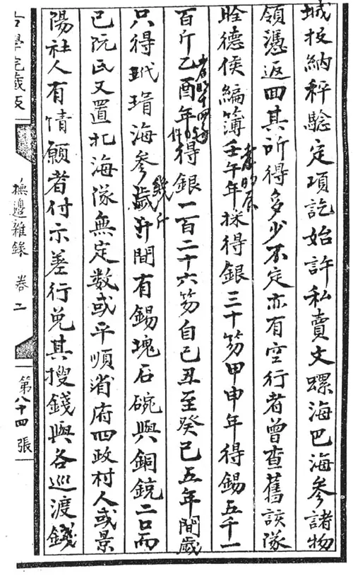
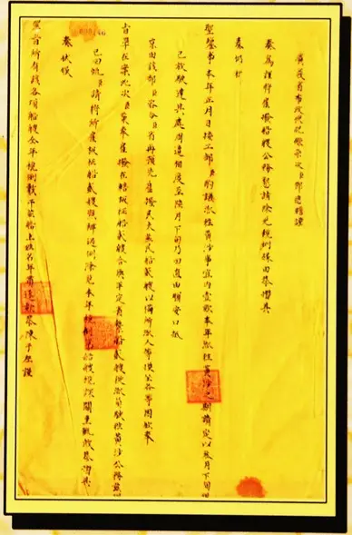
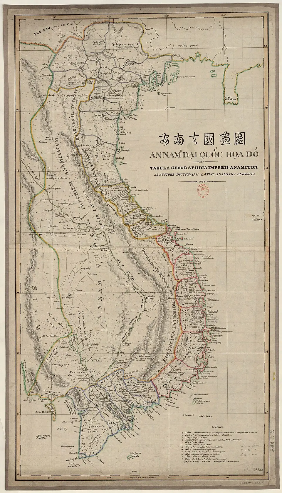

Đội Hoàng Sa: những chuyến ra khơi của người An Vĩnh
Hơn hai trăm năm, mỗi năm một nhóm người làng An Vĩnh ở Quảng Ngãi chèo thuyền nhỏ ra quần đảo Hoàng Sa, đi ba ngày ba đêm. Sử nhà Nguyễn, sách của Lê Quý Đôn và các bản châu bản ghi lại họ đi làm gì và triều đình thưởng phạt họ ra sao.

Đầu năm âm lịch, ở làng An Vĩnh, nay thuộc đảo Lý Sơn, Quảng Ngãi, những người được chọn vào đội Hoàng Sa nhận giấy sai đi và lương ăn sáu tháng. Các bản dịch Phủ biên tạp lục ghi khi thì tháng giêng, khi thì tháng hai. Họ chèo năm chiếc thuyền câu nhỏ ra khơi về phía đông bắc. Theo Lê Quý Đôn, phải mất ba ngày ba đêm mới tới đảo. Họ ở lại đến tháng tám mới về. Những chuyến đi ấy được ghi trong sách vở của nhiều đời, và ngày nay vẫn còn trong lễ hội của người Lý Sơn.
Phủ biên tạp lục chép gì
Năm 1776, Lê Quý Đôn làm Hiệp trấn Thuận Hóa cho chúa Trịnh, sau khi quân Trịnh chiếm vùng đất này của chúa Nguyễn. Trong bộ Phủ biên tạp lục, ông chép rằng họ Nguyễn đã lập đội Hoàng Sa gồm 70 suất, lấy người xã An Vĩnh. Mỗi năm họ thay phiên nhau đi.
Công việc chủ yếu là khai thác. Họ bắt chim, bắt cá để ăn, nhặt đồi mồi, hải sâm, ốc quý. Họ còn thu hồi đồ của những con tàu đắm quanh đảo: gươm, ngựa đồng, tiền bạc, đồ sứ, thiếc, chì, súng, ngà voi. Về đến đất liền, họ vào cửa Eo rồi lên Phú Xuân nộp hàng. Lê Quý Đôn ghi thêm một chi tiết thực tế: thu được khi nhiều khi ít, có lần phải về không.
Ông cũng chép lại một công văn của huyện Văn Xương, Quỳnh Châu, gửi sang Thuận Hóa. Công văn cho biết năm Càn Long thứ 18 (1753), mười quân nhân xã An Vĩnh ra Vạn lý Trường Sa tìm kiếm hàng hóa. Tám người lên bờ, hai người ở lại giữ thuyền. Gió làm đứt dây, thuyền dạt vào cảng Thanh Lan. Quan sở tại xét thực rồi đưa họ về quê. Theo sách, chúa Nguyễn còn lập đội Bắc Hải, lấy người Bình Thuận tình nguyện, đi Côn Lôn và các đảo phía nam, do cai đội Hoàng Sa kiêm quản.
Châu bản và thực lục


Sang thời nhà Nguyễn, các chuyến đi chuyển dần từ khai thác sang đo đạc. Năm 1815, Gia Long sai Phạm Quang Ảnh đem đội Hoàng Sa ra đảo đo thủy trình. Năm 1835, cai đội thủy quân Phạm Văn Nguyên đưa thợ và phu thuyền Quảng Ngãi, Bình Định ra dựng miếu và dựng bia. Năm 1836, Đại Nam thực lục chép vua Minh Mạng sai Phạm Hữu Nhật đem theo mười cái bài gỗ làm mốc. Mỗi bài dài 5 thước, khắc tên người và năm vâng mệnh ra Hoàng Sa đo đạc.
Châu bản, tức các văn bản hành chính có lời phê của vua, cho thấy những chuyến đi này được quản lý chặt. Theo châu bản tập Minh Mạng số 54, chuyến đi năm 1835 về chậm và đo vẽ bản đồ chưa chu toàn. Phạm Văn Nguyên và ba viên giám thành bị phạt mỗi người 80 trượng. Người dẫn đường Võ Văn Hùng và Phạm Văn Sanh thì được thưởng mỗi người một đồng tiền bạc Phi Long. Năm 2014, Châu bản triều Nguyễn được UNESCO công nhận là Di sản tư liệu thuộc Chương trình Ký ức Thế giới khu vực châu Á Thái Bình Dương.
Năm 1816: lá cờ trong lời kể của người Pháp


Chuyện Gia Long cắm cờ ở Hoàng Sa năm 1816 thường được nhắc đến, nhưng cần đọc kỹ nguồn. Đại Nam thực lục chỉ chép rằng tháng 3 năm 1816, vua sai thủy quân và đội Hoàng Sa đi thuyền ra Hoàng Sa để thăm dò đường thủy. Chi tiết lá cờ đến từ người phương Tây. Jean-Baptiste Chaigneau, cố vấn người Pháp của Gia Long, ghi rằng vua chính thức thu nhận quần đảo vào năm 1816. Giám mục Jean-Louis Taberd thì viết trong thập niên 1830 rằng năm 1816, Gia Long "đã long trọng trương lá cờ tại đây" (theo bản dịch tiếng Việt). John Crawfurd, trong sách in năm 1828, cũng ghi nhận Gia Long tuyên bố chủ quyền với Paracels.
Như vậy, việc triều Nguyễn cử người ra đảo năm 1816 có trong chính sử. Còn nghi thức trương cờ thì chỉ được biết qua lời kể của các tác giả phương Tây đương thời.
Dù vậy, một câu hát ru còn lưu truyền trên đảo cũng nhắc đến "chiếc chiếu bó tròn mấy sợi dây mây".
Đôi chiếu, dây mây và thẻ tre
Ở Lý Sơn, người ta kể rằng mỗi người lính Hoàng Sa khi lên đường phải tự chuẩn bị một đôi chiếu, bảy nẹp tre, bảy sợi dây mây và một thẻ bài ghi tên tuổi, quê quán. Nếu chết trên biển, thi thể được bó trong chiếu, nẹp tre, buộc dây mây và thả xuống biển cùng tấm thẻ, mong sóng đưa về quê. Báo Tuổi Trẻ ghi đây là điều "tương truyền". Chưa thấy văn bản nhà nước nào quy định cụ thể việc này. Dù vậy, một câu hát ru còn lưu truyền trên đảo cũng nhắc đến "chiếc chiếu bó tròn mấy sợi dây mây".
Những người không trở về được thờ bằng mộ gió, tức mộ không có thi hài. Chính Phạm Hữu Nhật mất tích trên biển năm 1854 và chỉ có một nấm mộ như thế ở An Vĩnh. Hằng năm, các dòng họ trên đảo vẫn làm lễ khao lề thế lính Hoàng Sa. Năm 2013, lễ này được công nhận là di sản văn hóa phi vật thể quốc gia. Quần đảo Hoàng Sa ngày nay vẫn đang có tranh chấp chủ quyền. Từ năm 1974, Trung Quốc kiểm soát quần đảo, còn Việt Nam vẫn khẳng định chủ quyền của mình.